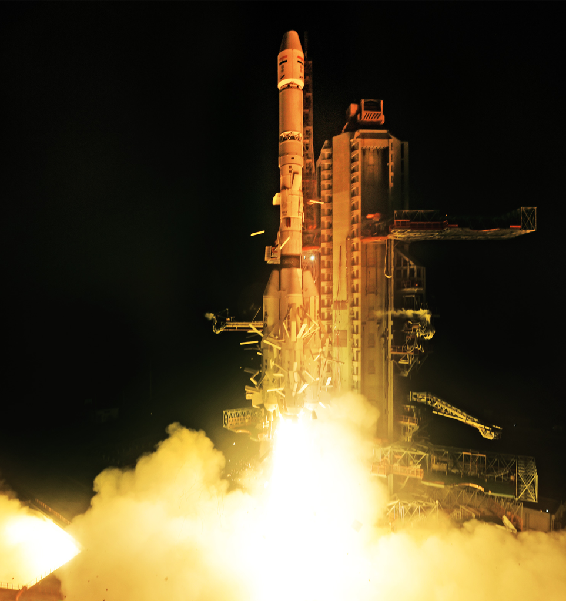
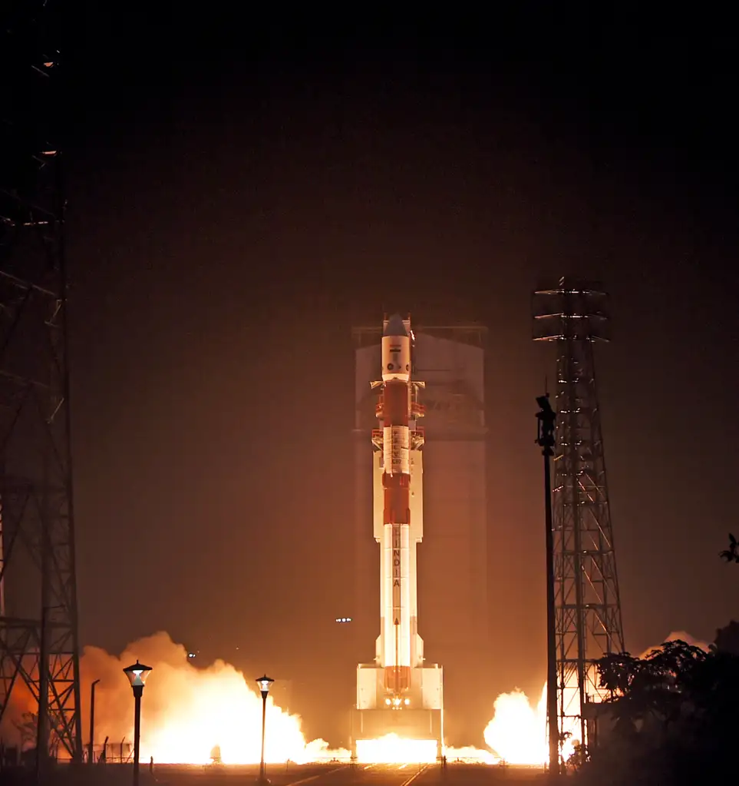
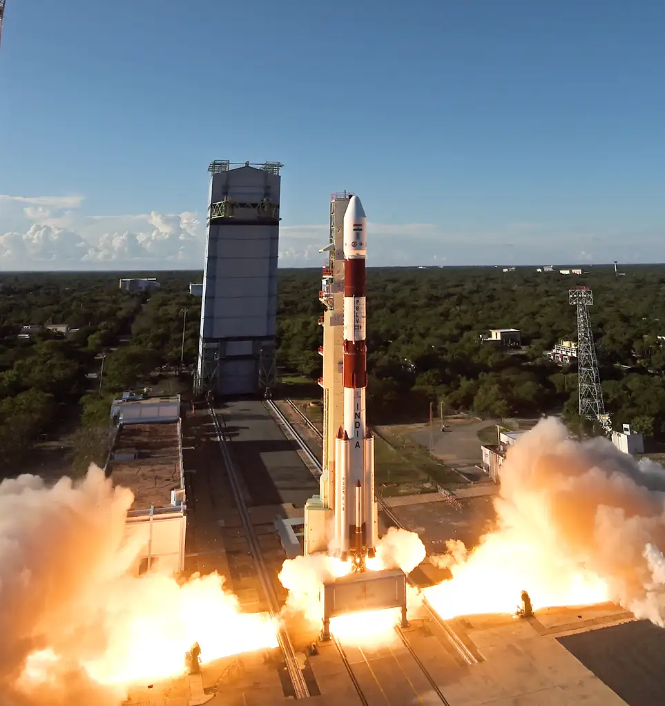
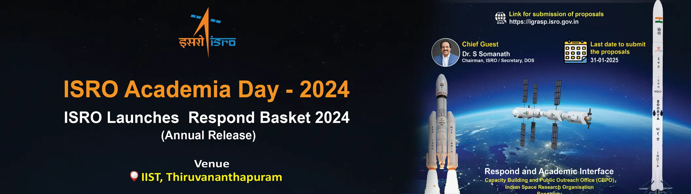
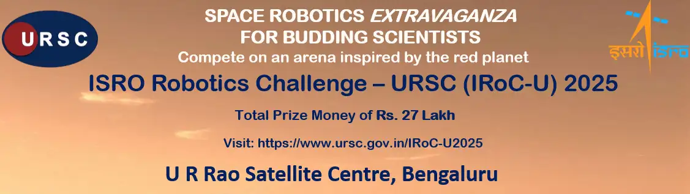
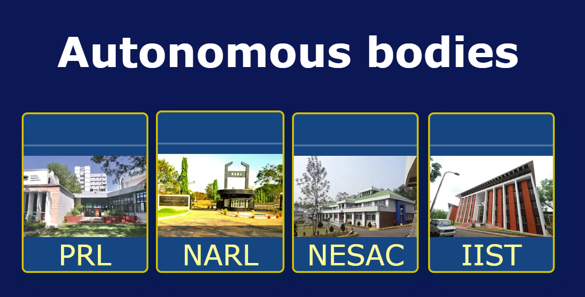

Former Secretaries / Chairman

The Chairman of the Indian Space Research Organisation is the statutory head of the Indian Space Research Organisation (ISRO). The officeholder is a secretary to the Government of India and an executive of the Department of Space (DOS) which directly reports to the Prime Minister of India.
Recent Updates

GSLV-F15 / NVS-02 MISSION
Launched on: January 29, 2025

PSLV C60/SPADEX Mission
Launched on: December 30, 2024

PSLV-C59/PROBA-3 Mission
Launched on: December 05, 2024
HIGHLIGHT
ISRO Academic Day-2024

The ISRO Academia Day 2024 was held on December 10, 2024 at the Indian Institute of Space Science and Technology (IIST) in Thiruvananthapuram. The event was organized to strengthen collaboration between ISRO and academia
ISRO robotics challenge -URSC(IRoC-U)2025

ISRO Portals

Autonomous bodies
